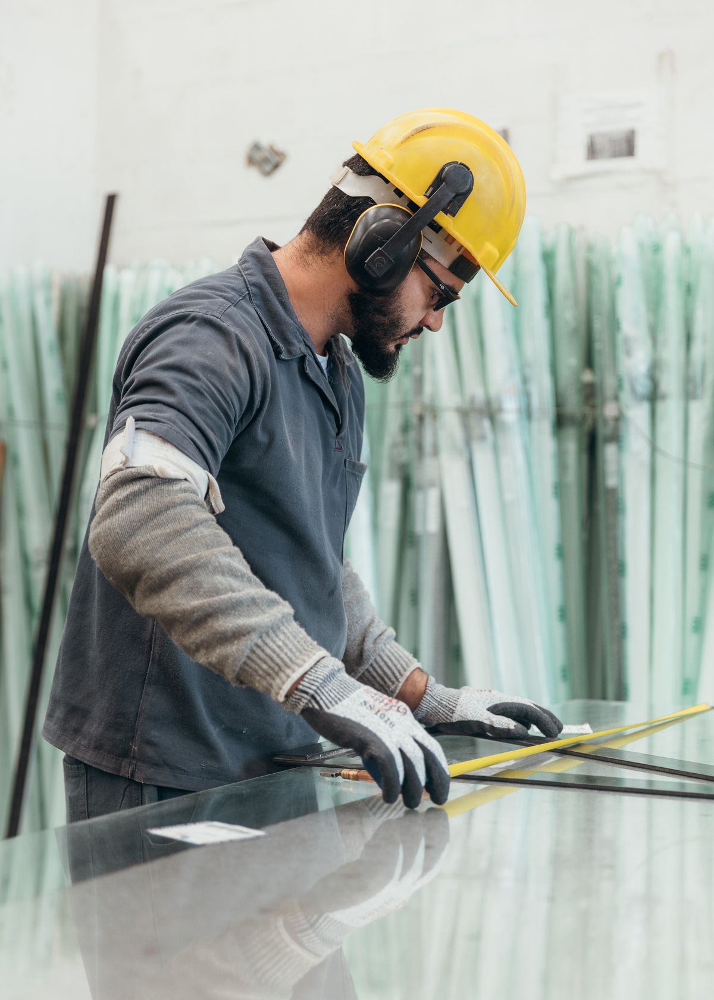

Vidriería
Describinos qué necesitás y en qué lugar. Si tenés medidas o una foto del espacio, podés sumarlas al mensaje.
→
VIDRIERÍA · ABERTURAS · RECOLETA
Vidriería y aberturas en Arenales 1681. Contanos qué estás buscando y conversamos los detalles.
Consultar por WhatsAppUNA CONVERSACIÓN, UN PRIMER PASO
Contanos un poco sobre el espacio y el trabajo que tenés en mente. Así podemos entender mejor tu consulta.
Describinos qué necesitás y en qué lugar. Si tenés medidas o una foto del espacio, podés sumarlas al mensaje.
→Contanos qué abertura estás buscando y qué información ya tenés para conversar sobre el tema.
→Podés empezar con una descripción breve y continuar por WhatsApp.
VIDRIERÍA ARENALES — RECOLETA
Un espacio.
Una idea por conversar.
REFERENCIAS VISUALES
Estas imágenes ayudan a imaginar posibles usos del vidrio. Son ilustrativas y no representan trabajos del local ni confirman servicios específicos.


Fotos de referencia de Pexels. No son imágenes de trabajos realizados por Vidriería Arenales.
ANTES DE ESCRIBIR
ENCONTRANOS
Lunes a viernes 8:00 a 18:00
HABLEMOS
Completá estos datos para preparar el mensaje. WhatsApp se abrirá y vos decidís si querés enviarlo.